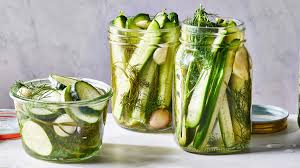

Fridge Pickles

Simple, Quick & Delicious
This simple recipe will make you delicious pickles in as little as 6 hours.
With only a few simple ingredients and minimal prep time. Watch out Vlasic!
Ingredients
- 1 x Field Cucumber
- 1 x garlic clove
- 1 x sprig of dill
- 1 tbsp coarse salt
- Pickling or white vinegar
Steps
- Slice the cucumber into thin pieces and place it in a mason jar.
- Peel the garlic clove and place it whole in the mason jar.
- Roughly cut up the dill and place it in the mason jar.
- Add the tbsp of salt.
- Fill the jar with vinegar until all the ingredients are covered.
- Shake to mix and leave in the fridge.
- Allow 6 hours for the pickles to brine shaking periodically.